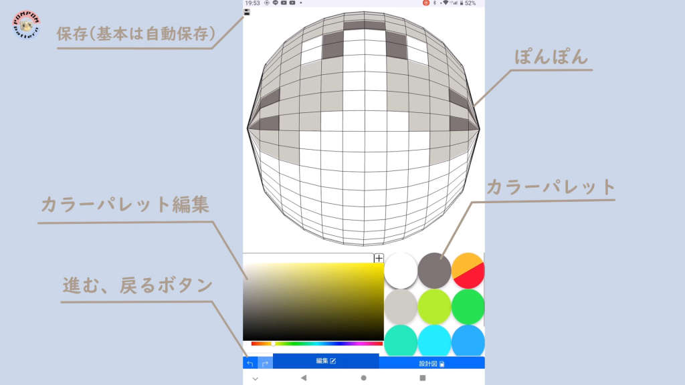
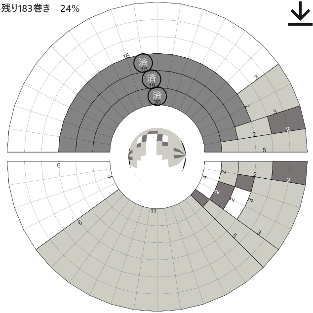
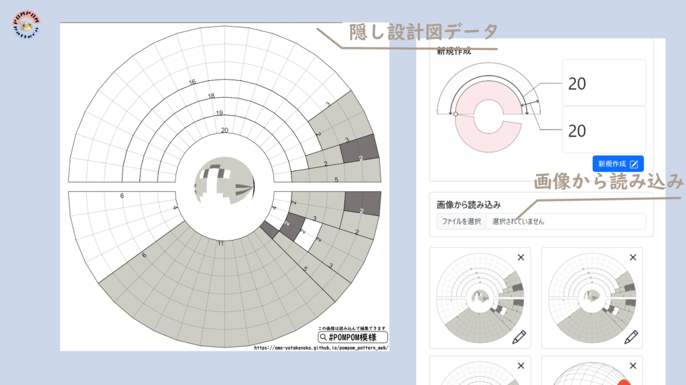
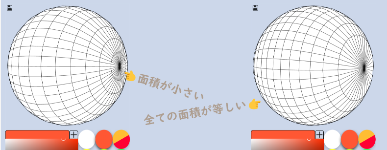
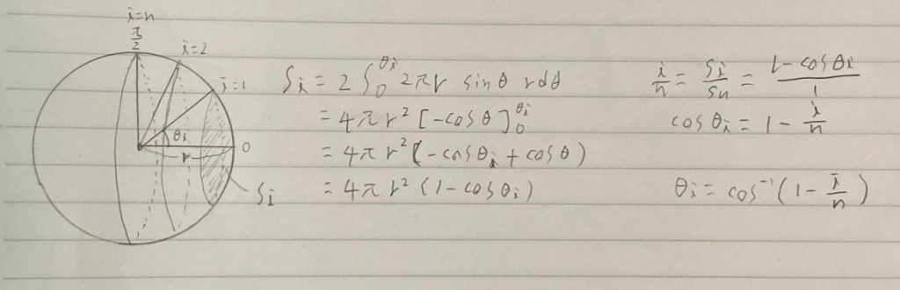
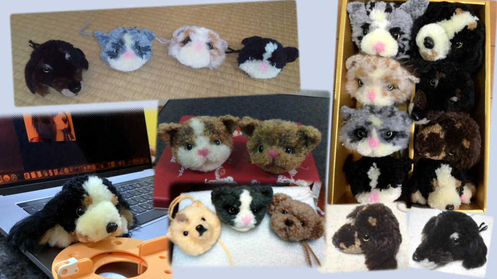

一般的に毛糸を使ったパターン入りぽんぽん手芸はオリジナルの物を作ることは困難で、本を参考に作る場合が殆どですが、このアプリを使うことで簡単にオリジナルの設計図が作成でき、手芸の自由度を広げます。
紹介動画
カメラからデザイン、AI巻きカウンタの説明
- 主にReact, Typescriptを使用して実装
- 使用したライブラリ等
- 3D表示: Three.js
- カラーパレット: React Color
- デザインテンプレート: Bootstrap
- アイコン: Bootstrap Icons, イラストレーション・アイコン素材（デジタル庁）, Affinity Designerを用いて作成
- 骨格推定:MediaPipe Hands
- ホスティング: GitHub Pages
- 保存領域はLocalStorage (別途画像として外部にエクスポート可能)
- PWAアプリとして開発しているため、ダウンロードせずに試しに使ってみる、気に入ったらインストールして外でもデータ通信せずに使うといった使い方が可能です。
ぽんぽんとは
ぽんぽんやぼんぼんとよばれる毛糸を使った手芸をご存じでしょうか? 毛糸と百均等でも売っている専用の器具や厚紙などを使って作ることができます
ぽんぽんの構造のイメージ
このぽんぽんに巻く際、途中で毛糸の色を変えることでぽんぽんに模様を入れることができます。
しかし所望のデザインを得るために,予めどのような順番でどの色を巻けばいいかという判断は非直観的であり、本アプリではGUI 上でぽんぽんの完成図を設計することで,それを作るための巻き図を出力します。
編集画面
編集画面では3Dのぽんぽんに色を塗っていきます。

編集画面
設計図画面
設計図画面どの色を何回何段巻くかが表示されます。巻いたところをタップすることで済のマークが表示されます。また左上に残りの合計巻き数、現在の進捗率が表示されます。

設計図
共有
設計図画面の右上を押すことで設計図の情報の入った巻き図の画像をダウンロードすることができ、ホーム画面の「画像から読み込み」 ボタンから読み込んで編集することが可能です。その為各種SNS等で画像として巻き図の画像を装飾の仕方と共に共有することができます

設計図のエクスポート
工夫した点
ぽんぽんの緯度にあたる角度を等間隔にした場合曲に近い毛糸の面積が小さくなってしまう為,表面積が均一になるように調整しました


毛糸の等表面積化
経緯
過去に Google Play、App Store で Unity で開発していたものを公開していましたが、Developer ライセンスが切れてしまい、長らく放置していたところ、何人かからこのアプリを使いたいという連絡をいただきました。それを受けて、プログラムをゼロから書き直し、UI なども再設計しました。使っていただきました
画面は古いバージョンになります 掲載許可を頂きましたぽんぽん再開だー💪と早速失敗…
— Qooro (@den_xap) May 30, 2023
全身のぽんぽん作ろうとしたのに完全に配色を間違えて頭だけになりそうな子…「PONPON模様」まで使って間違えてるし😩
2枚目と4枚目は巻き図直したもの。#犬ぽんぽん #動物ぽんぽん pic.twitter.com/w5ECuW3Qyj
キンペンちゃんは「PONPON模様」でデザインしました。いつもありがとうございます😊#動物ぽんぽん#キングペンギン pic.twitter.com/3Hw1ySIu05
— Qooro (@den_xap) January 23, 2023
うさダルマぽんぽんメイキング。 pic.twitter.com/u3NHoRqyXk
— Qooro (@den_xap) December 22, 2022
最後に
本アプリによって毛糸ぽんぽんを使った手芸の自由度が広がれば良いなと思っています

完成したぽんぽんたち